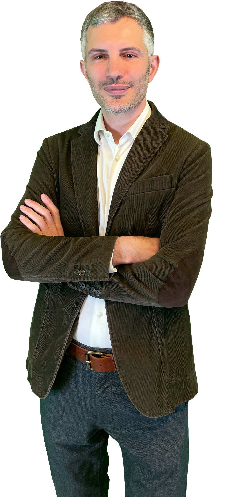

Beauty Ambassadors / GUEST PROFILE
Dr. Ali Ramazani
Dermatologist; specialist in skin and hair
A dermatologist with 16 years of specialist practice, sixth place in the national residency examination, first place in dermatology admission and international research publications in dermatology.
16 years of specialist practiceFirst place in national dermatology admission
EXPERIENCE AND ACHIEVEMENTS
Selected achievements
- Specialist in dermatology, skin and hair
- Sixth place in the national residency examination
- First place in national dermatology admission
- 16 years of specialist clinical practice
- Research and international scientific publications in skin diseases
FEATURED ON BEAUTY AMBASSADORS
Do Botox and fillers require lifelong treatment?
Common misconceptions about ongoing injections, natural-looking results, treatment pricing and knowing when not to treat.